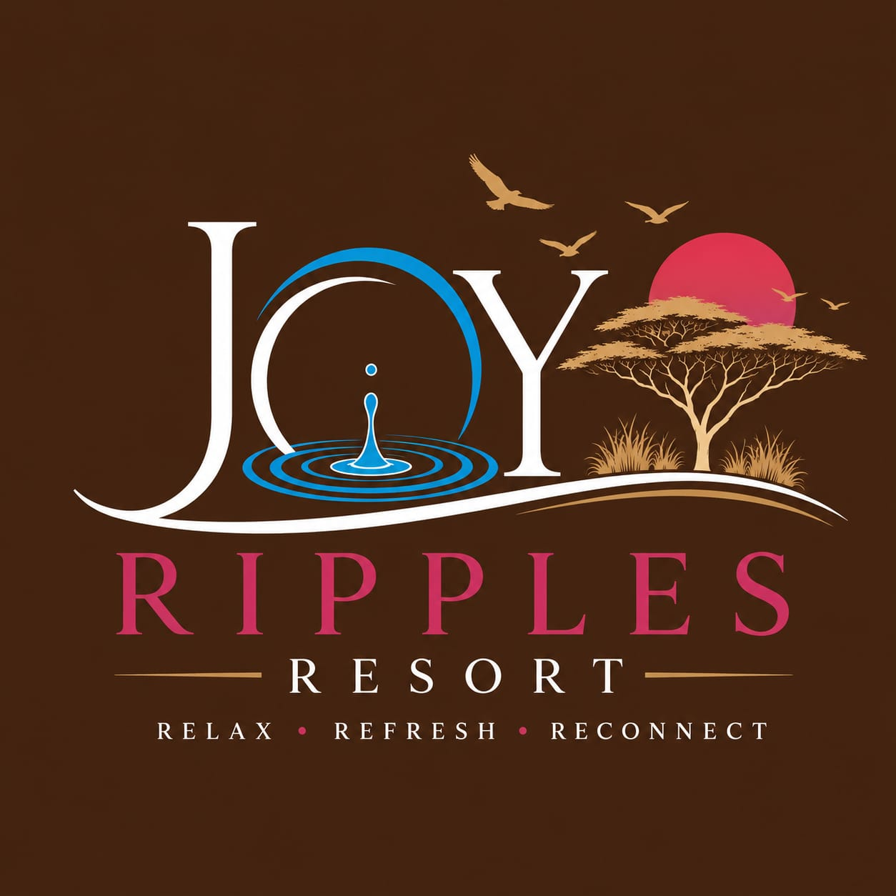

THE JOY RIPPLES GALLERY
A little glimpse.
A lovely feeling.
Real photographs from the resort. Explore the gardens, the table and the quiet moments in between.
EAT WELL. STAY AWHILE. COME TOGETHER.

JOY RIPPLESH O T E L & R E S O R TTHE JOY RIPPLES GALLERY
Real photographs from the resort. Explore the gardens, the table and the quiet moments in between.
EAT WELL. STAY AWHILE. COME TOGETHER.